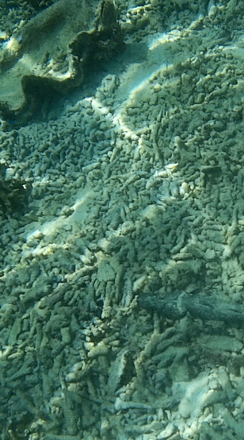
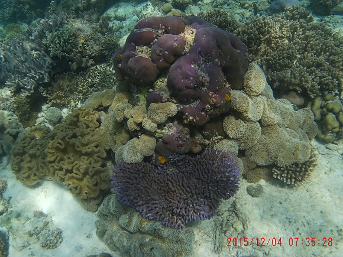
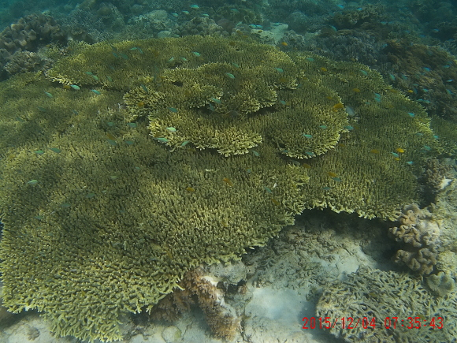
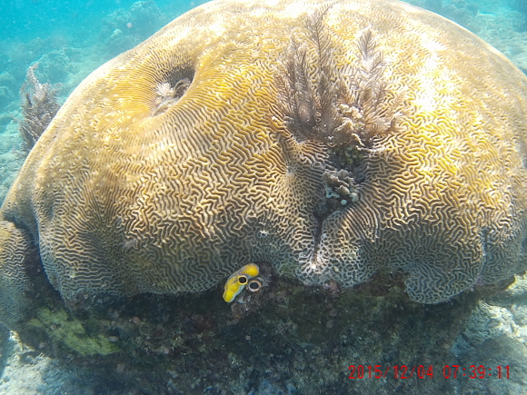
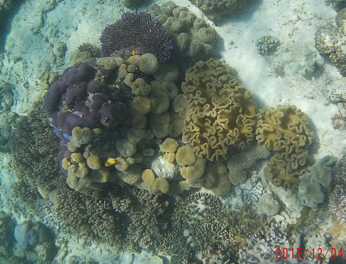

-------------------------------------------
Geography refresher. That large island called New Guinea at the eastern end of Indonesia is politically split in two; eastern half now called Papua New Guinea, while the western Indonesian half is again split in two, Papua (was Irian Jaya), and West Papua. Raja Ampat refers to the region of four large islands off the western end of West Papua. This coral triangle has the greatest marine biodiversity in the world. A fee of 1,000,000 Rupiah (currently about US$77) is required of all forigners who enter the area. Indonesian visitors must pay a 500,000 Rupiah fee -- pretty steep given their lower earnings potential..
-------------------------------------------
| From Ambon we take the final flight leg to Sorong, West Papua. We will have only minutes to pick up our luggage, hire a vehicle, and make haste to the port where the Waisai Ferry is about to leave -- the only ferry today. As luck would have it, the new sim card worked wonders. We frantically texted our buddies, already on board the ferry, with updates of our exact location -- to try to hold the ferry for us -- we are rushing as fast as possible. The captain DID hold the ferry for us! That saved us a lot of money in boat hires and an expensive night in Sorong.
In Waisai, we met the homestay boat for our final leg of the journey, arriving at dusk at Kodiris Homestay on the island of Gam Saturday evening. 24 hours of travel, 36 hours with no sleep. Dinner was served at 8, and I crashed about 9. Accomodations were two per Nipa hut, built on stilts over the water. Toilets and showers were a 3-4 minute walk in-land. The dining room was where everyone congregated. The generators were started up at dusk and turned off sometime between 10 and 11 pm. I had no experience using a cam, nor taking photos underwater. The throw-away film cameras were a joke. A decent underwater camera is pretty specialized, and a good one runs into considerable expense. But while in Bangkok, I decided to look around again. One camera store at Pantip plaza showed me a cheap knock-off of a Go-Pro cam, called an SJ Cam. Takes both video and 12MB stills, no optical zoom, no flash. For just over $100, the pachage includes an underwater housing and a host of attachments for mounting to bicycles, motorcycles, dash boards, and various orientation adapters. Uses up to 32 GB microSD card. Bought a spare battery too. Took three or four days before I started getting acceptable underwater pictures with it. Never been one for shooting videos, but made an exception this time. Next skill to work on -- how to use video editing software, then place in a web page! In the mean time, take a look at these stills during the last several days at Raja Ampat. With the rare times in the water looking at decent coral, this cam was a perfect fit for me -- after the learning curve. (Get too close to the subject, and it goes out of focus. Too far away, everything turns cloudy blue. Don't use the zoom -- just crop on the computer. And try to hold the cam steady.) Taking photos of fish is more difficut when you keep bobbing to the surface. Remember to borrow a weight belt! It is always amazing just how beautiful pristine coral is. I'll add one bleak photo (below) of what coral looks like after a dynamite fisherman passes through the area.  |
   
|

| Anyone planning a snorkling trip? |
Special Topics:
| |||||